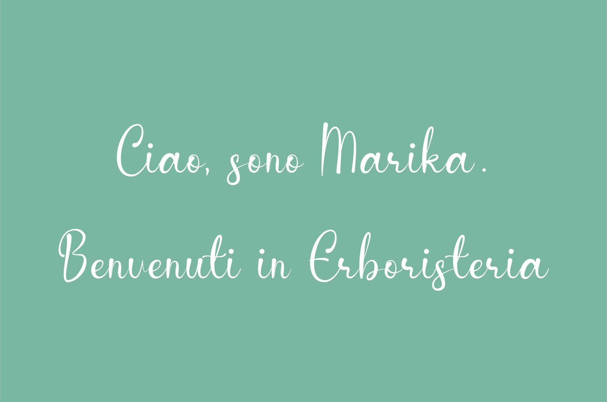
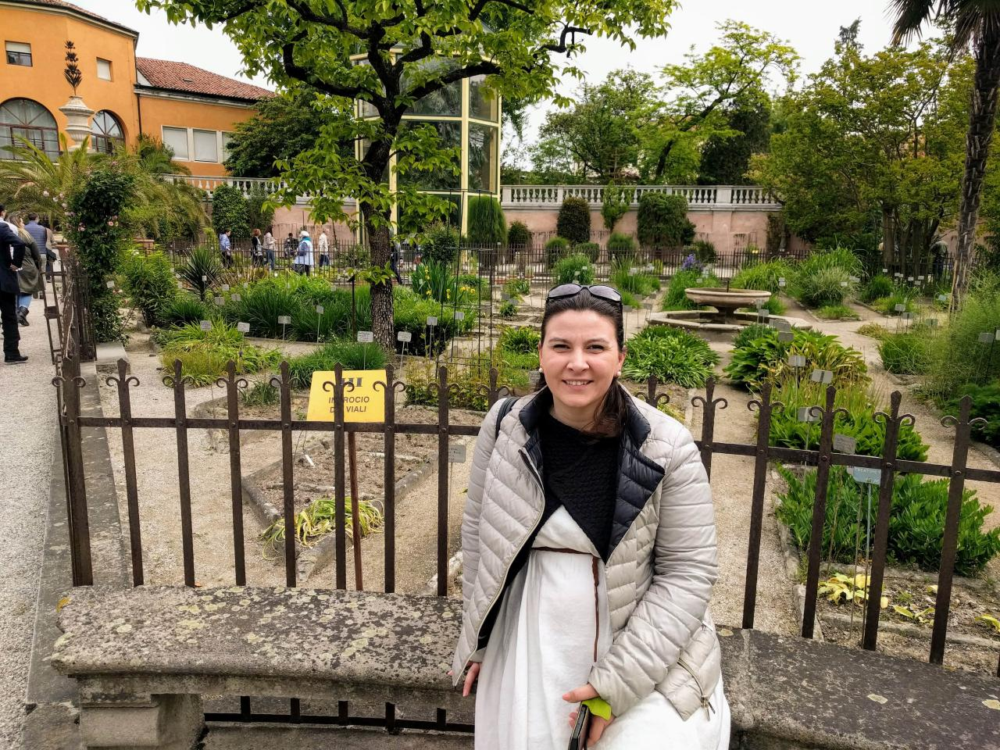
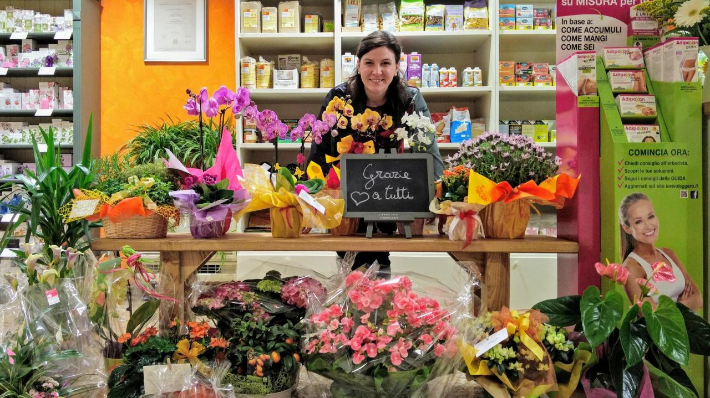

L’erboristeria oggi è il giusto equilibrio tra antichi saperi e nuove tecnologie, dove per trovare quello che fa per noi è necessario essere disposti a conoscersi profondamente.
Voglio dirvi qualcosa di più su Erboristeria Alchimia perchè chi entra nel mio negozio scopre che a parte gli scaffali pieni di prodotti, trova una persona pronta ad accogliervi in tutte le vostre sfaccettature e problematiche, cercando di mettervi a disposizione tutta la mia competenza ma anche tutta la mia empatia.
La mia passione per la natura e le erbe mi ha portato a seguire il corso dell'Università di Padova “Tecniche Erboristiche” dove mi sono laureta nel 2008. Nonostante la laurea mi abbia dato tutte le basi necessarie alla comprensione delle piante e della natura umana, in questo mestiere non bisogna mai smettere di studiare, quindi da qui ho continuato la formazione (e continua tutt’ora) con corsi privati, work-shop e giornate informative allo scopo di poter comprendere sempre meglio le vostre necessità e proporvi sempre le soluzioni migliori.

Ovviamente molte delle mie conoscenze provengono anche dall’ambiente lavorativo. Ho avuto la fortuna di poter cominciare il mio percorso in una farmacia veneziana e successivamente in diverse erboristerie a Venezia, Mogliano Veneto e San Donà di Piave e non posso che ringraziare tutte le persone che negli anni mi hanno sostenuto e insegnato moltissimo.
Con questo bagaglio nel 2016 mi sono sentita pronta per avviare la mia attività e in un piccolo paese come Tamai di Brugnera nasce la mia erboristeria.
Siete tutti invitati nella mia erboristeria e, se non potete raggiungermi, abbiamo creato appositamente questo spazio virtuale dove trovare i miei prodotti oppure contattarmi per qualsiasi consiglio o informazione.